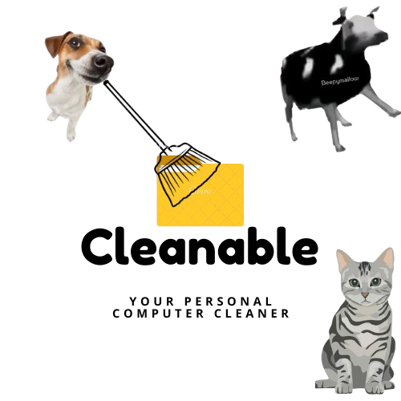

Cleanable
Cleanable
Your Junk File Cleaner
Tired of a slow, cluttered PC? Cleanable is a cute, fast, and efficient cleaner that removes junk files and boosts your desktop’s performance.
Download Cleanable!Version 1.0 · Approx. 30-40MB On the next screen, hit download anyway.